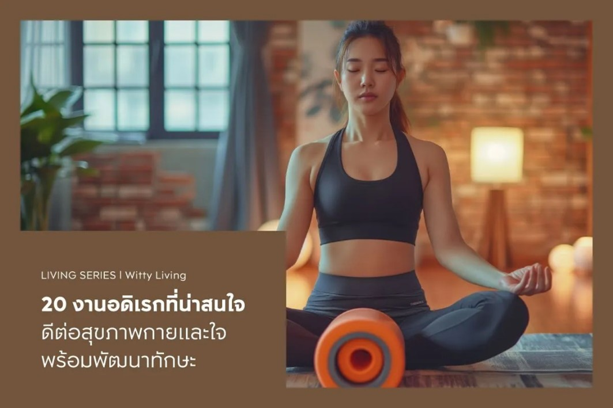
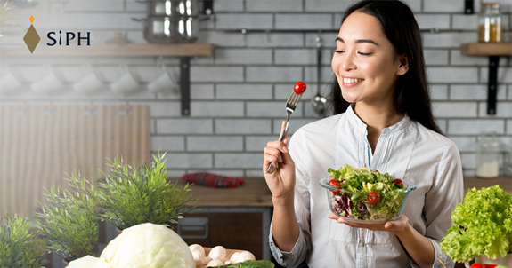
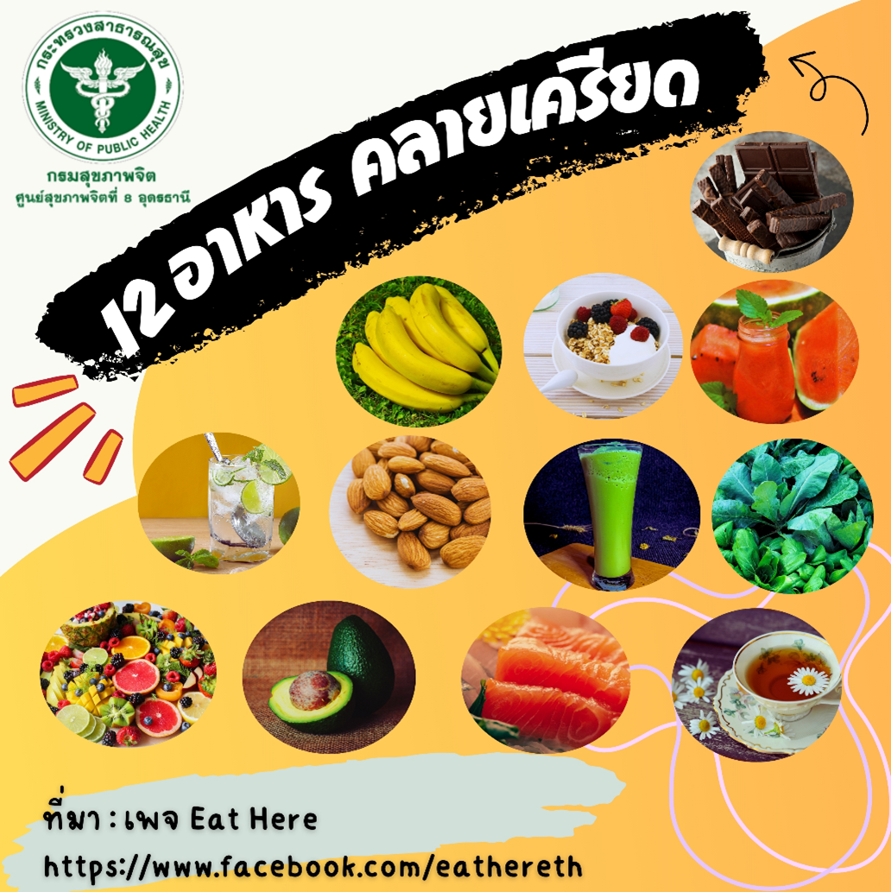

ชื่อบทความ : กิจกรรมส่งเสริมความฉลาดทางอารมณ์ (EQ)
เนื้อหาย่อย : การที่เด็กมีความฉลาดทางอารมณ์ที่เหมาะสมจะส่งผลให้เด็กอยู่ร่วมกับผู้อื่นได้ รู้จักความอดทน รอคอยจิตใจที่เป็นธรรมชาติ มีน้ำใจรู้รู้รู้ชนะ ยอมรับผิด ใฝ่รู้เรียนรู้ เรียนรู้ ปรับระบบที่สิ่งแวดล้อมที่ปรับปรุงและการควบคุมตนเองมีกิจกรรมที่ส่งเสริมให้เด็กฉลาดทางอารมณ์มี 3 หัวข้อ
บทความโดย : อลิสราราตรี นักกิจกรรมบำบัดโรงพยาบาลมนารมย์

ชื่อบทความ : 7 วิธี ดูแลสุขภาพจิต เริ่มได้เลย ไม่ต้องรอให้ป่วย
เนื้อหาย่อย : ในโลกปัจจุบันที่เต็มไปด้วยความเร่งรีบ ความกดดัน และการเปลี่ยนแปลงอยู่ตลอดเวลา “สุขภาพจิต” กลายเป็นเรื่องสำคัญของคนทุกช่วงวัย ไม่ได้จำกัดอยู่เพียงผู้ที่มีภาวะเจ็บป่วยทางจิตเท่านั้น เพราะทุกคนล้วนต้องเผชิญกับความเครียด ความเหนื่อยล้า และความท้าทายในชีวิตประจำวัน
บทความโดย : กัลยากร ไพรสาลี พยาบาลวิชาชีพ โรงพยาบาลมนารมย์
ชื่อบทความ : เริ่มก่อน สุขได้ก่อน! กับ 10 กิจกรรมเพื่อสุขภาพกายและใจ
เนื้อหาย่อย : ในยุคที่ชีวิตเต็มไปด้วยความเร่งรีบการหันมาให้ความสำคัญกับตัวเองกลายเป็นสิ่งจำเป็น การมองหากกิจกรรมเพื่อสุขภาพที่ช่วยเติมเต็มพลังทั้งร่างกายและจิตใจจึงไม่ใช่เรื่องไกลตัวอีกต่อไป บทความนี้ ได้รวบรวมหลากหลายวิธีสร้างสุขที่ทำได้ง่าย ๆ ในชีวิตประจำวัน...
บทความโดย : ยูเมะพลัส
ชื่อบทความ : แชร์ 10 กิจกรรมยามว่าง แก้เครียดจากงาน
เนื้อหาย่อย : หลังจากทำงานหนักมาทั้งวัน หลายคนมักจะเครียดและเหนื่อยล้า การหากิจกรรมยามว่างที่เหมาะสมจึงเป็นเรื่องสำคัญ เพราะนอกจากจะช่วยผ่อนคลายความเครียดแล้ว ยังเป็นการใช้เวลาว่างให้เกิดประโยชน์ต่อทั้งร่างกายและจิตใจ มาดูกันว่ามีกิจกรรมอะไรบ้างที่จะช่วยเติมพลังให้คุณกลับมาสดชื่นอีกครั้ง
บทความโดย : Okamura. โพสใน news

ชื่อบทความ : 20 งานอดิเรกที่น่าสนใจ ดีต่อสุขภาพกายและใจ พร้อมพัฒนาทักษะ
เนื้อหาย่อย : รวม 20 งานอดิเรกที่น่าสนใจ ช่วยเสริมสร้างสุขภาพกายและใจ พร้อมพัฒนาทักษะ แถมยังอาจต่อยอดเป็นธุรกิจ ช่วยสร้างรายได้ได้อีกด้วย
บทความโดย : Life Hacks บริษัท เอพี (ไทยแลนด์) จำกัด (มหาชน)

ชื่อบทความ : กิน หลับ ขยับกาย
เนื้อหาย่อย : กิน หลับ ขยับกาย อย่างไรให้ทั้งกายและใจเป็นสุข?
บทความโดย : สุขภาพใจ.com

ชื่อบทความ : 10 อาหารต้านอาการซึมเศร้า ปัดเป่าอารมณ์ด้านลบ
เนื้อหาย่อย : ในโลกที่หมุนไปอย่างรวดเร็วในปัจจุบัน เป็นเรื่องปกติที่ผู้คนจะประสบกับความเครียดและความรู้สึกเศร้าหรือวิตกกังวลเป็นครั้งคราว แม้ว่าการขอความช่วยเหลือจากผู้ชำนาญเฉพาะทางเป็นสิ่งสำคัญสำหรับผู้ที่เป็นโรคซึมเศร้า แต่การรับประทานอาหารที่มีประโยชน์อาจจะช่วยส่งเสริมอารมณ์และสุขภาพจิตโดยรวมให้ดีขึ้นได้...
บทความโดย : บทความสุขภาพ รพ.นวเวชอินเตอร์เนชั่นแนล

ชื่อบทความ : อาหารแบบไหนคลายเครียด
เนื้อหาย่อย : ความเครียด ที่อาจส่งผลต่ออาการและร่างกายอาจส่งผลต่อความเครียดในระดับฮอร์โมนอะดรีนาลีน (Adrenaline) ในช่วงที่รู้สึกเบื่ออาหารสำหรับความเครียดอย่างต่อเนื่องจนทำให้เกิดความเครียดอย่างต่อเนื่องสำหรับระดับฮอร์โมนคอร์ติซอล (Cortisol) เป็นผลทำให้เกิดความอาหารที่มีน้ำตาลไขมันและพลังงานสูง...
บทความโดย : สาระสุขภาพ อาหารแบบไหนคลายเครียด โรงพยาบาลศิริราช ปิยมหาราชุณย์

ชื่อบทความ : สื่อสุขภาพจิต 12 อาหาร คลายเครียด
เนื้อหาย่อย : ช่วงนี้ทั้งอากาศที่ร้อน ทำให้บางท่านมีความเครียด เกิดขึ้นได้ จึงอยากชวนทุกท่าน ถือคติ "เครียดได้ คลายเป็น” และวิธีคลายเครียดอีก 1 วิธี ที่เราจะนำมาฝากกัน "12อาหารคลายเครียด" ที่หาซื้อง่าย กินแล้วดีต่อใจ ร่างกายแข็งแรง และช่วยให้จิตใจผ่อนคลายไปพร้อม ๆ กันจ้า
บทความโดย : ศูนย์สุขภาพจิตที่ 8 อุดรธานี
ชื่อบทความ : กินให้หายเครียด...ไม่ใช่กินเยอะ แต่ต้องกิน 11 สิ่งนี้
เนื้อหาย่อย : รู้ไหมว่า? เมื่อเกิดความเครียดขึ้นในร่างกาย...ยิ่งเครียดนาน ต่อมหมวกไตก็ยิ่งใช้วิตามินในร่างกายมากขึ้นจนอาจเกิดภาวะพร่องวิตามิน ส่งผลให้ร่างกายอ่อนเพลีย นอนไม่หลับ ท้องผูก และเป็นซึมเศร้าได้ เราจึงต้องเสริมอาหารที่อุดมด้วยวิตามินเพื่อเป็นการทดแทน ส่วนจะมีเมนูไหนที่เป็นตัวช่วยชั้นยอดในการเติมความสุข...
บทความโดย : คุณณัฐยา คีรีเพชร นักโภชนาการอาหาร ศูนย์ส่งเสริมสุขภาพ โรงพยาบาลพญาไท 2